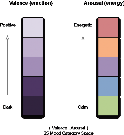

Open topic with navigation
You are here: Concepts > Discovery Features > Mood Overview > Mood Descriptors
Mood Descriptors
MusicID, MusicID-File, and MusicID-Stream return mood metadata in track results. Gracenote defines over 100 mood types. This granularity of moods is useful in non-automotive applications, such as desktop and tablet interfaces. To simplify mood selection for with limited size interfaces, Gracenote provides a superset of 25 moods called Level 1. Examples of Level 1 range from Peaceful to Excited and from Somber to Aggressive.
Mood Valence/Arousal Model
Gracenote characterizes moods using a Valence/Arousal model. The mood of every track in the Gracenote repository is expressed as a coupled value of (Valence/Arousal):
- Valence (Emotion) is a psychological term for defining the positivity or negativity of emotions. Valence describes the attractiveness (positive valence) or averseness (negative valence) of an event, object, or situation. For example, the emotions popularly referred to as negative, such as anger and fear, have negative valence. Emotions popularly referred to as positive, such as joy and peacefulness, have positive valence.
- Arousal (Energy) is a psychological term for describing the energy associated with an emotion. For example, the emotions associated with peaceful are considered to have low arousal, while the emotions associated with celebratory have a high arousal.

Mood Levels
The following tables list mood levels for Level 1 and Level 2 categories. In these examples, the top row of numbers represents Arousal (Energy) values, and the column of numbers on the left represent the Valance (Emotion). For example in Level 1: Peaceful is (1,5), indicating a low Arousal of 1, and high Valance of 5. On the contrary, Aggressive is (5,1) indicating high Arousal of 5, and a low Valance of 1.
For a list of Valence/Arousal value mappings for each mood level, see Mood Level Arousal/Valance Values.
Level 1 Valence/Arousal Map

Level 2 Valence/Arousal Map

You are here: Concepts > Discovery Features > Mood Overview > Mood Descriptors
How can we improve this documentation?
Open topic with navigation